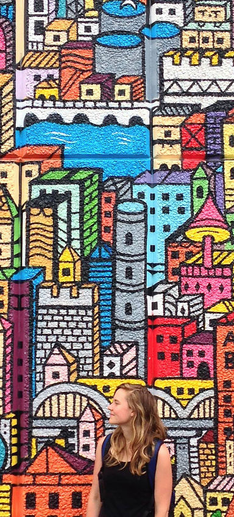

My name is Liza Herbert. I live in Toronto, Ontario where I'm studying Film and Television at Humber College.
I have training as an editor in Final Cut Pro, Adobe Premiere, and Avid. I started editing in 2007 at the Centre for Arts and Technology in Halifax where I was lucky to have a great mentor.
I feel fortunate for having achieved my goals of learning the technical skills behind digital editing and making my first film.
My next goal is to work as an Assistant Director. I'm looking to gain more experience in a professional environment. I am also available if your production house is looking for an Editor.
I can be contacted at LizaHerbert@hotmail.com
EXPERIENCE
Experienced in FINAL CUT PRO, PREMIERE and AVID
Education/Training 2015 / 2016
Film And Television Production, Humber College
Education/Training 2007 / 2008
Digital Filmmaking
The Center for Arts and Technology
High School Media Teacher 2015
Asia Through a Lens
MEI Academy
Teacher's Assistant 2014
Europe through a Lens
MEI Academy
Editor 2014
Promotional Material
Lisa Noto - Natural and Organic Make Up
Assistant Editor 2013
Segal Centre of Performing Arts
Grip 2013
Divinita
Anastasia Bourlakova
Grip 2008
Window to the Soul
Charlie Mac Productions
Assistant Editor 2008
Hatch Post